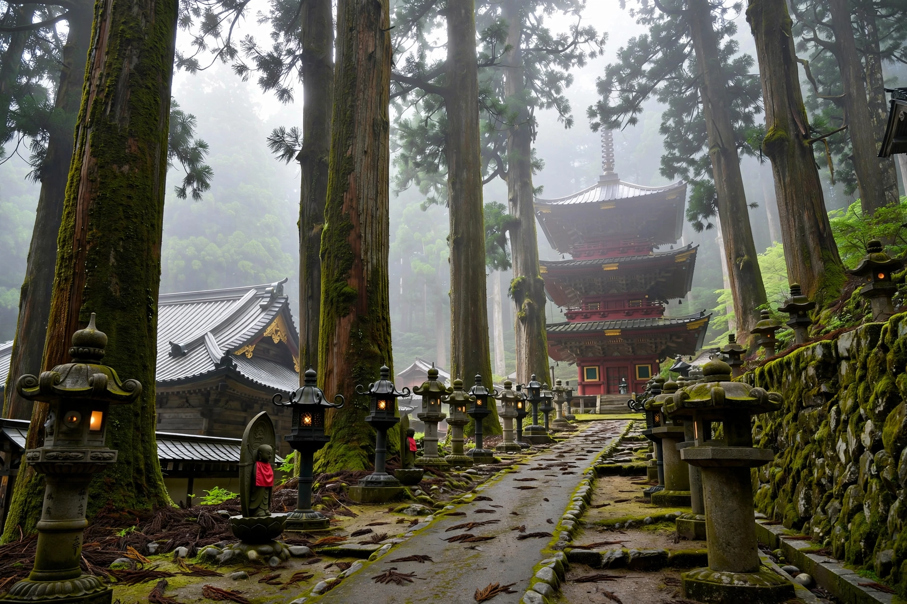

| Kūkai | |
|---|---|
| Born | 774, Sanuki Province, Japan |
| Died | 835, Mount Kōya |
| Posthumous title | Kōbō Daishi |
| School | Founder, Shingon Buddhism |
| Known for | Esoteric Buddhism; Mount Kōya; Tō-ji; kana tradition; calligraphy |
Kūkai (空海; 774 – 22 April 835), also known posthumously as Kōbō Daishi (弘法大師, "The Great Master Who Spread the Buddhist Teaching"), was a Japanese Buddhist monk, calligrapher, poet and artist who founded the esoteric Shingon school of Buddhism. He is one of the most revered figures in Japanese religious history.
Born Saeki no Mao in Sanuki Province (modern Kagawa, Shikoku), Kūkai studied Confucian classics for the civil service before turning to Buddhism. In 804 he travelled to Tang China in the same embassy as Saichō, founder of Tendai. In Chang'an he studied under the esoteric master Huiguo, who initiated him into the mandalas of the Diamond and Womb Realms and named him a dharma heir shortly before dying in 805. Kūkai returned to Japan in 806 with a large collection of sutras, mandalas and ritual implements.
Granted the mountain plateau of Mount Kōya by Emperor Saga in 816, Kūkai founded Kongōbu-ji as a monastic centre; in 823 he was entrusted with Tō-ji in Kyoto, which became the institutional base of Shingon. His writings, notably Attaining Enlightenment in This Very Existence and the Ten Stages of the Development of Mind, argued that enlightenment could be achieved in this lifetime through esoteric practice centred on the cosmic Buddha Mahāvairocana and the "three mysteries" of body, speech and mind. Tradition credits him with compiling the Iroha poem and helping develop the kana syllabaries; he was also famed as one of the "Three Brushes" (sanpitsu) of Japanese calligraphy, and legend attaches to him feats of engineering and irrigation in Shikoku. In 835 he entered meditation at Mount Kōya; Shingon believers hold that he remains in eternal samādhi (nyūjō) awaiting the future Buddha Maitreya. The 88-temple Shikoku Pilgrimage is closely associated with his cult.